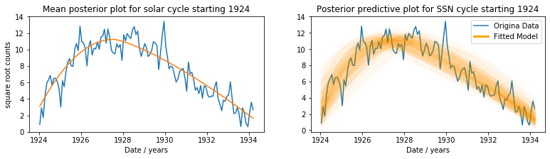
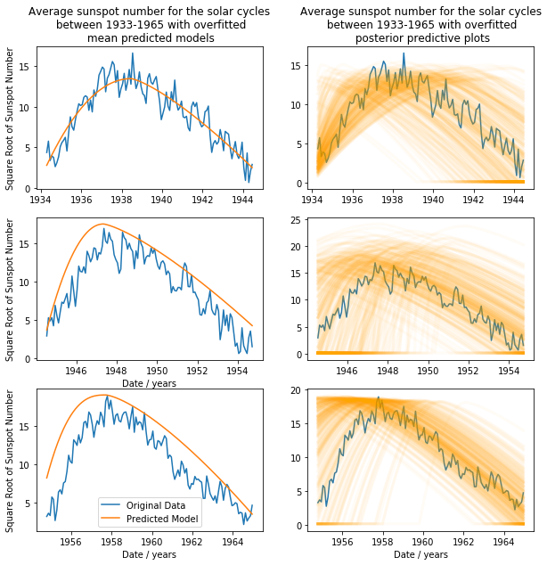
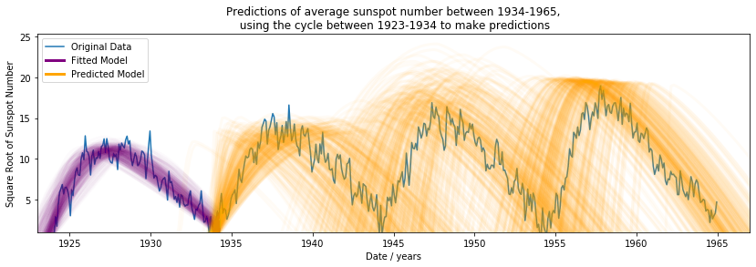

Using Zeus and Nestle to model the sunspot cycles
A sunspot is an area on the surface of the Sun that appears a lot darker than its surroundings, caused by intense magnetic fields regulating a convection effect on the Sun's surface. Humanity has been tracking the average number of sunspots visible from Earth on the solar disk, and found that the sunspot number follows a cycle over roughly 11 years.
In this example, I'll use the "Zeus" and "Nestle" samplers to fit a model describing the sunspot number to a single solar cycle. I'll then use this model to create a new model which predicts the properties of a solar cycle, given the properties of the previous cycle.
Useful imports
# numpy
import numpy as np
# pandas
import pandas as pd
# scipy
from scipy.signal import find_peaks
from scipy.stats import gaussian_kde
from scipy import integrate
from scipy.special import ndtri, gammaln
# Plotting
import corner
import matplotlib.pyplot as plt
%matplotlib inline
# Samplers
import zeus
print('Zeus version: {}'.format(zeus.__version__))
import nestle
print('Nestle version: {}'.format(nestle.__version__))
# misc
import logging
from time import time
Zeus version: 1.0.7
Nestle version: 0.2.0
Viewing the data
Using Pandas, we can load the .csv file containing the average sunspot number over 24 solar cycles, since the 1750s. First I will plot the entire dataset to decide which cycles are of interest, however before plotting I'll first take the square root of the sunspot number. This is just to decrease the variance in the peak height, which will make everything a little easier when it comes to making a model that can predict the height of the next peak.
dataframe = pd.read_csv("SN_m_tot_V2.0.csv", sep=";", usecols=[2,3], header=None)
dates = list(dataframe[2])[80:]
ssn = list(dataframe[3])[80:]
sqrtssn = np.sqrt(ssn)
plt.figure(figsize=(16,3))
plt.plot(dates,sqrtssn)
plt.xlabel("Date / years")
plt.ylabel("Square Root of Sunspot Number")
plt.title("Average sunspot number from 1750-2020")
plt.show()

I chose to look at the 4 solar cycles starting around the year 1924, as there seems to be a consistent (predictable!) change from peak to peak. Next, we need to take a closer look at those 4 solar cycles so that we can create a model.
start = 2020 # data point corresponding to the start of the 1924 solar cycle
period = 123 # average width of a solar cycle
fig,(ax1,ax2) = plt.subplots(1,2,figsize=(12,3))
# plot region of interest
ax1.plot(dates[start:start + 4*period],sqrtssn[start:start + 4*period])
ax1.set_xlabel("Date / years")
ax1.set_ylabel("Square Root of Sunspot Number")
ax1.set_title("Average sunspot number from 1924-1965")
# fragment the 4 solar cycles into 4 separate lists
peaks = [sqrtssn[start + i*period:start + (i+1)*period] for i in range(4)]
peaktimes = [dates[start + i*period:start + (i+1)*period] for i in range(4)]
# plot a typical solar cycle
ax2.plot(peaktimes[0],peaks[0])
ax2.set_xlabel("Date / years")
ax2.set_title("A typical solar cycle")
plt.show()

The model
We can create the model by splitting it into two parts: the ascending region, and the descending region. To define these regions, we need to know when the cycle begins, when the cycle peaks, and when the cycle ends. We'll call these "t0", "tmax", and "t1" respectively. Next, we need to know the amplitude of the peak, which we will call "c". Finally, we need 2 more parameters which will describe how much the ascending and descending regions curve, which we will call "a1", and "a2".
Using all of these, we can define our model for a single solar cycle below:
def cycle(times, c, a1, a2, t0, tmax, t1):
# a1,a2 > 1
if a1 < 1:
a1 = 1
if a2 < 1:
a2 = 1
#t0 < tmax < t1
if t0 >= tmax:
t0 = tmax - 1
if t1 <= tmax:
t0 = tmax + 1
# sunspot number as a function of time
ssn = [c*(1-((tmax-t)/(tmax-t0))**a1) if t < tmax
else c*(1-((t-tmax)/(t1-tmax))**a2) for t in times]
# ssn > 0
ssn_non_negative = [i if i > 0 else 0.1 for i in ssn]
return ssn_non_negative
I'll take the first solar cycle (starting 1924), and use some guesses for each parameter to overplot a model, just to give an idea of what the model will look like.
# plot cycle data
plt.plot(peaktimes[0],peaks[0],label="Original Data")
# plot an example model, with guessed parameters
x = np.linspace(min(peaktimes[0]),max(peaktimes[0]),300)
y = cycle(x,11,2.1,1.3,1923.5,1927.5,1935)
plt.plot(x,y,label="Example Model")
plt.xlabel("Date / years")
plt.ylabel("Square Root of Sunspot Number")
plt.title("A typical solar cycle, with an \n example model overplotted")
plt.legend()
plt.show()

Modelling with Zeus
Zeus has a very similar interface to the sampler "emcee", which uses an ensemble technique to obtain the prior distributions. The next step is defining the prior distributions for each parameter. I'll use a normal distribution for the peak amplitude "c", since it's pretty easy to eyeball. Aside from that, I'll be using uniform priors for every other parameter as they're a little trickier to guess.
nens = 100 # number of ensemble points
ndims = 6 # number of parameters
# mean and standard deviation of normal parameter priors
cmu,csig = 11,1
# lower and upper bounds of uniform parameter priors
a1min,a1max = 1,3
a2min,a2max = 1,3
t0min,t0max = 1922,1925
tmaxmin,tmaxmax = 1926,1929
t1min,t1max = 1933,1936
param_priors = []
# normal prior on c
param_priors.append(np.random.normal(cmu,csig,nens))
# uniform prior on a1
param_priors.append(np.random.uniform(a1min,a1max,nens))
# uniform prior on a2
param_priors.append(np.random.uniform(a2min,a2max,nens))
# uniform prior on t0
param_priors.append(np.random.uniform(t0min,t0max,nens))
# uniform prior on tmax
param_priors.append(np.random.uniform(tmaxmin,tmaxmax,nens))
# uniform prior on t1
param_priors.append(np.random.uniform(t1min,t1max,nens))
param_samples = np.array(param_priors).T
Next, we need to define a log prior, log likelihood, and log posterior. The log prior can be defined as below:
def logprior(theta):
"""
Function to return the log of the prior, given set of current parameters
"""
lprior = 0
for i in range(len(param_priors)):
# sum log priors from each parameter
if i == 0:
# normal priors
lprior -= 0.5*((theta[i] - cmu) / csig)**2
else:
# uniform priors
# set bounds
if i == 1:
low, up = a1min, a1max
elif i == 2:
low, up = a2min, a2max
elif i == 3:
low, up = t0min,t0max
elif i == 4:
low, up = tmaxmin,tmaxmax
else:
low, up = t1min,t1max
# parameter must be between bounds
if low < theta[i] < up:
pass
else:
lprior = -np.inf
return lprior
The log likelihood takes the form of a Poisson likelihood, since the sunspot counts are non-negative. using "lmbda" as the expected value of the cycle function, we can define the likelihood as below:
def loglike(theta, times, obs):
"""
Function to return the log likelihood, given the current parameters, dates, and sunspot counts
"""
# unpack parameters
c_like, a1_like, a2_like, t0_like, tmax_like, t1_like = theta
# expected value
lmbda = np.array(cycle(times, c_like, a1_like, a2_like, t0_like, tmax_like, t1_like))
n = len(obs)
a = np.sum(gammaln(np.array(obs)+1))
b = np.sum(np.array(obs) * np.log(lmbda))
return -np.sum(lmbda) - a + b
Finally the log posterior is simply the sum of the log prior log likelihood:
def logposterior(theta, times, obs):
"""
Function to return the log posterior, given the log prior and log likelihood
"""
lprior = logprior(theta)
# check log prior is finite
if not np.isfinite(lprior):
return -np.inf
return lprior + loglike(theta, times, obs)
Sampling the data
Now that we've defined everything we need, we can easily run the sampling process with Zeus.
# create sampler using the first peak
sampler = zeus.sampler(nens, ndims, logposterior, args=[peaktimes[0], peaks[0]])
nburn = 500 # burn-in points
nsamples = 500 # points after burn-in
time0 = time()
sampler.run_mcmc(param_samples, nburn + nsamples)
time1 = time()
print("Time taken to sample first peak with Zeus: {} seconds".format(time1-time0))
Initialising ensemble of 100 walkers...
Sampling progress : 100%|██████████| 1000/1000 [01:16<00:00, 13.13it/s]
Time taken to sample first peak with Zeus: 76.26689600944519 seconds
Results
Collecting the samples after the sampling is equally simple, remembering to discard the burn-in samples at the start of the chain. We can create a corner plot using "corner.py", which shows the posteriors of each parameter along with contour plots describing how one parameter varies with any other:
samples_zeus = sampler.get_chain(flat=True, discard=nburn)
def plotposts(samples, labels, **kwargs):
fig = corner.corner(samples, labels=labels, hist_kwargs={'density': True}, **kwargs)
pos = [i*(len(labels)+1) for i in range(len(labels))]
for axidx, samps in zip(pos, samples.T):
kde = gaussian_kde(samps)
xvals = fig.axes[axidx].get_xlim()
xvals = np.linspace(xvals[0], xvals[1], 50)
fig.axes[axidx].plot(xvals, kde(xvals), color='firebrick')
labels = ['c', 'a1', 'a2', 't0', 'tmax', 't1']
plotposts(samples_zeus, labels)

The posterior for the "a2" parameter looks as though it peaks below a value of 1, which is outside the prior range. However, the model will not have the correct shape if "a1" is less than 1, which suggests that the choice of model may be limiting the quality of the fit.
Next, I'll find the means and standard deviation error on each parameter. I'll also choose random samples from the chains of each parameter, which I'll use to visualise the posteriors.
param_mu = [np.mean(samples_zeus[:,i]) for i in range(6)]
param_sig = [np.std(samples_zeus[:,i]) for i in range(6)]
nfits = 300
param_samples = [np.random.choice(samples_zeus[:,i],nfits) for i in range(6)]
post_samples = np.array(param_samples).T
print("Parameters describing the square root SSN cycle starting 1923: \n \n" +
" c = {} \u00B1 {} square root counts\n".format(param_mu[0], param_sig[0]) +
" a1 = {} \u00B1 {} \n".format(param_mu[1], param_sig[1]) +
" a2 = {} \u00B1 {} \n".format(param_mu[2], param_sig[2]) +
" t0 = {} \u00B1 {} years\n".format(param_mu[3], param_sig[3]) +
"tmax = {} \u00B1 {} years\n".format(param_mu[4], param_sig[4]) +
" t1 = {} \u00B1 {} years\n".format(param_mu[5], param_sig[5]))
Parameters describing the square root SSN cycle starting 1923:
c = 11.23419227189279 ± 0.5155512374811139 square root counts
a1 = 2.046091218734536 ± 0.5511917043187438
a2 = 1.3175512464689283 ± 0.2551941095539496
t0 = 1923.4364606185572 ± 0.3683613113062203 years
tmax = 1927.5745437571138 ± 0.6532168763478214 years
t1 = 1935.0535923941627 ± 0.30717761056370796 years
Plotting the posterior
Below I'll show two plots. The left plot will show the model produced using the mean parameters for the first peak. The right plot will show a posterior predictive plot, where the darker the colour of the plot, the higher the probability of the model passing through that region.
fig, (ax1,ax2) = plt.subplots(1,2,figsize=(13,3))
# mean posterior plot
ax1.plot(peaktimes[0], peaks[0])
x = np.linspace(min(peaktimes[0]), max(peaktimes[0]), 300)
y = cycle(x,*param_mu)
ax1.plot(x,y)
ax1.set_xlabel("Date / years")
ax1.set_ylabel("square root counts")
ax1.set_title("Mean posterior plot for solar cycle starting 1924")
# posterior predictive plot
x = np.linspace(min(peaktimes[0]),max(peaktimes[0]),300)
ax2.plot(peaktimes[0], peaks[0], label="Origina Data")
for i in range(len(post_samples)):
params = post_samples[i]
y = cycle(x,*params)
ax2.plot(x,y,'orange',alpha=0.02, linewidth=3,label="Fitted Model" if i == 0 else "")
ax2.set_xlabel("Date / years")
ax2.set_title("Posterior predictive plot for SSN cycle starting 1924")
leg = ax2.legend()
for lh in leg.legendHandles:
lh.set_alpha(1)
plt.show()

Predicting the next solar cycles
We now know the properties of the solar cycle between 1924-1934. Next, we want to know the properties of the next three cycles in our region of interest. We could just redefine our prior distributions, and run the sampling again for each peak. Alternatively, we could create a new model which takes the current solar cycle parameters, and uses them to predict the next solar cycle. This model will only realistically be able to make long-range predictions if the solar cycles evolve consistently, as mentioned above.
This way this model is put together is quite complicated. More details can be found here, but the brief is that we need 3 scaling parameters (y1,y2,y3), and 4 translation parameters (d0,d1,d2,d3). This model can be implemented as follows:
def predict_cycle(theta_prev, d0, d1, d2, d3, y1, y2, y3):
# theta_prev contains the set of parameters describing the previous solar cycle
c_prev, a1, a2, t0_prev, tmax_prev, t1_prev = theta_prev
# start of cycle found using slight deviation d0
t0 = t1_prev + d0
# current c found using current t0 and previous c,tmax
c = y1*c_prev/(t0 - tmax_prev) + d1
# current tmax found using current t0,c
# t0-param_mu[4] describes the time since 1924 solar cycle
tmax = t0 + y2*c + d2*(t0-param_mu[4])**0.9
# current t1 found using current tmax,c
t1 = tmax + y3*c + d3*(t0-param_mu[4])**0.3
#a1,a2 unchanged
# return new set of parameters
theta_new = (c,a1,a2,t0,tmax,t1)
return theta_new
We can now try to guess the scaling and translational parameters, and using the set of parameters defining the first solar cycle, we can try to predict the second solar cycle between 1934-1944. I'll show this by plotting the data for the second solar cycle, and overplotting the predicted model. After some trial and error, I found the following prediction:
# predict the next peak parameters, using current peak parameters
params = predict_cycle(param_mu,-1,0,-0.4,0.2,7.5,0.5,0.5)
# plot second solar cycle
plt.plot(peaktimes[1],peaks[1],label="Original Data")
# overplot predicted model with new parameters
x = np.linspace(min(peaktimes[1]),max(peaktimes[1]),300)
plt.plot(x,cycle(x,*params),label="Predicted model")
plt.xlabel("Date / years")
plt.ylabel("Square Root of Sunspot Number")
plt.title("Average square root sunspot number between 1934-1944 \n with overplotted predicted model")
plt.legend()
plt.show()

Using the above guesses, we can define some prior distributions. This is done in exactly the same way as above, however due to some hard limits on the parameters (such as a1,a2 being strictly greater than 1), I'll use uniform priors for all parameters.
nens = 100
ndims = 7
d0min,d0max = -2.,0
d1min,d1max = -1.,1.
d2min,d2max = -1.,0.
d3min,d3max = 0.,0.4
y1min,y1max = 7.,8.
y2min,y2max = 0.2,0.8
y3min,y3max = 0.25,0.75
predict_priors = []
# uniform prior on d0
predict_priors.append(np.random.uniform(d0min,d0max,nens))
# uniform prior on d1
predict_priors.append(np.random.uniform(d1min,d1max,nens))
# uniform prior on d2
predict_priors.append(np.random.uniform(d2min,d2max,nens))
# uniform prior on d3
predict_priors.append(np.random.uniform(d3min,d3max,nens))
# uniform prior on y1
predict_priors.append(np.random.uniform(y1min,y1max,nens))
# uniform prior on y2
predict_priors.append(np.random.uniform(y2min,y2max,nens))
# uniform prior on y3
predict_priors.append(np.random.uniform(y3min,y3max,nens))
priors = [(d0min,d0max),(d1min,d1max),(d2min,d2max),(d3min,d3max),
(y1min,y1max),(y2min,y2max),(y3min,y3max)]
predict_samples = np.array(predict_priors).T
We need to create new log prior, log likelihood, and log posterior functions. This is done almost exactly as above, but with very slight variations, so I'll won't go into detail about the machinery in these functions.
def loglike_predict(theta, times, obs):
"""
Function to return the log likelihood, given the current parameters, dates, and sunspot counts
"""
# expected value found by predicting new parameters, and then mimicking old likelihood function
params_new = predict_cycle(param_mu, *theta)
lmbda = np.array(cycle(times, *params_new))
n = len(obs)
a = np.sum(gammaln(np.array(obs)+1))
b = np.sum(np.array(obs) * np.log(lmbda))
return -np.sum(lmbda) - a + b
def logprior_predict(theta):
"""
Function to return the log of the prior, given set of current parameters
"""
lprior = 0
for i in range(len(predict_priors)):
# sum log priors from each parameter
low, up = priors[i][0],priors[i][1]
# uniform prior for time parameters
if low < theta[i] < up:
pass
else:
lprior = -np.inf
return lprior
def logposterior_predict(theta, times, obs):
"""
Function to return the log posterior, given the log prior and log likelihood
"""
lprior = logprior_predict(theta)
# check log prior is finite
if not np.isfinite(lprior):
return -np.inf
return lprior + loglike_predict(theta, times, obs)
Running the sampler, using the same burn-in and chain lengths as above, we can tune the parameters so they predict the parameters of the second solar cycle well. We'll then assume that these parameters are the same for the third and fourth peaks, and see how good the quality of the fit is with increasing forecast time.
sampler = zeus.sampler(nens, ndims, logposterior_predict, args=[peaktimes[1], peaks[1]])
nburn = 500
nsamples = 500
time0 = time()
sampler.run_mcmc(predict_samples, nburn + nsamples)
time1 = time()
print("Time taken to sample predict function with Zeus: {} seconds".format(time1-time0))
Initialising ensemble of 100 walkers...
Sampling progress : 100%|██████████| 1000/1000 [01:19<00:00, 12.56it/s]
Time taken to sample predict function with Zeus: 79.66238069534302 seconds
Prediction results
Out of curiosity, we can check the corner plot for the prediction model. Since the prediction model has every parameter interacting with each other, we can expect a load of covariance between parameters.
samples_zeus2 = sampler.get_chain(flat=True, discard=nburn)
predict_param_mu = [np.mean(samples_zeus2[:,i]) for i in range(7)]
predict_param_sig = [np.std(samples_zeus2[:,i]) for i in range(7)]
nfits = 300
predict_param_samples = [np.random.choice(samples_zeus2[:,i],nfits) for i in range(7)]
predict_post_samples = np.array(predict_param_samples).T
labels = ['d0','d1','d2','d3','y1', 'y2', 'y3']
plotposts(samples_zeus2,labels)

Lets check what predictions we can now make. The below code takes the set of parameters describing the first solar cycle, and uses it to predict the second solar cycle. The prediction will be plotted over the data, and then the program will move on to the next peak and repeat the process. Since we're making predictions on using predictions, over and over, we can expect the fit to get worse as we look deeper into the future.
I'll also use the samples from the prediction model posteriors, and create a posterior predictive plot for each cycle. This should show the quality of the prediction, and how it evolves with increasing forecast time.
fig,axs = plt.subplots(3,2,figsize=(10,10))
# predict second peak parameters
# plot mean posterior plot
new_param_mu = predict_cycle(param_mu,*predict_param_mu)
axs[0,0].plot(peaktimes[1],peaks[1])
x = np.linspace(min(peaktimes[1]),max(peaktimes[1]),300)
axs[0,0].plot(x,cycle(x,*new_param_mu))
axs[0,0].set_ylabel("Square Root of Sunspot Number")
axs[0,0].set_title("Average sunspot number for the solar cycles\n between 1933-1965" +
" with overfitted\n mean predicted models")
# posterior predictive plot
axs[0,1].plot(peaktimes[1],peaks[1])
new_pred = []
for i in range(len(predict_post_samples)):
pred = predict_cycle(param_mu,*predict_post_samples[i])
new_pred.append(pred)
y = cycle(x,*pred)
axs[0,1].plot(x,y,"orange",alpha=0.04,linewidth=3)
axs[0,1].set_title("Average sunspot number for the solar cycles\n between 1933-1965" +
" with overfitted\n posterior predictive plots")
# predict third peak parameters
# plot mean posterior plot
new_param_mu = predict_cycle(new_param_mu, *predict_param_mu)
axs[1,0].plot(peaktimes[2],peaks[2])
x = np.linspace(min(peaktimes[2]),max(peaktimes[2]),300)
axs[1,0].plot(x,cycle(x,*new_param_mu))
axs[1,0].set_ylabel("Square Root of Sunspot Number")
axs[1,0].set_xlabel("Date / years")
# posterior predictive plot
axs[1,1].plot(peaktimes[2],peaks[2])
new_pred2 = []
for i in range(len(predict_post_samples)):
pred = predict_cycle(new_pred[i],*predict_param_mu)
new_pred2.append(pred)
y = cycle(x,*pred)
axs[1,1].plot(x,y,"orange",alpha=0.04,linewidth=3)
# predict fourth peak parameters
# plot mean posterior plot
new_param_mu = predict_cycle(new_param_mu, *predict_param_mu)
axs[2,0].plot(peaktimes[3],peaks[3],label="Original Data")
x = np.linspace(min(peaktimes[3]),max(peaktimes[3]),300)
axs[2,0].plot(x,cycle(x,*new_param_mu),label="Predicted Model")
axs[2,0].set_ylabel("Square Root of Sunspot Number")
axs[2,0].set_xlabel("Date / years")
axs[2,0].legend()
# posterior predictive plot
axs[2,1].plot(peaktimes[3],peaks[3])
for i in range(len(predict_post_samples)):
pred = predict_cycle(new_pred2[i],*predict_param_mu)
y = cycle(x,*pred)
axs[2,1].plot(x,y,"orange",alpha=0.04,linewidth=3)
axs[2,1].set_xlabel("Date / years")
plt.show()

Saying that our prediction model was fairly simplified, it actually does a pretty good job at predicting the solar cycle shape. The posterior plots show the predictions getting worse over time as expected, but even so the accuracy on the mean plots are within 20% for the majority of the cycles.
Modelling with Nestle
The predictions from this model only work if we know in advance that the next solar cycle will carry on the trend from the previous solar cycle. Since in reality it is very hard to say how the Sun will behave in advance, this model won't be all that useful.
However, it did save us from having to individually sampling 3 solar cycles. To decide whether or not the time save is worth the loss in accuracy, I'll use "Nestle" to sample both the second solar cycle (between 1934-1945), and the prediction model for that same solar cycle. Nestle uses nested sampling, and so it produces a value of the marginalised evidence. Comparing these values will allow us to see how much accuracy we're sacrificing by predicting the solar cycle, instead of just sampling the next peak.
Sampling the data
To start, we'll assume that Zeus did a good enough job at sampling the first solar cycle, and jump straight to the second cycle (1934-1945). Lets define some new guesses for each parameter (c,a1,a2,t0,tmax,t1):
# mean and standard deviation of normal parameter priors
cmu,csig = 13,1
# lower and upper bounds of uniform parameter priors
a1min,a1max = 1,3
a2min,a2max = 1,3
t0min,t0max = 1931,1935
tmaxmin,tmaxmax = 1936,1940
t1min,t1max = 1943,1947
param_priors = [(cmu,csig),(a1min,a1max),(a2min,a2max),
(t0min,t0max),(tmaxmin,tmaxmax),(t1min,t1max)]
We can reuse most of the stuff we had from before, except for the log prior functions. Nestle samples from a unit hypercube parameter space, so we need a function that transforms the priors back to their original space. This only requires a slight modification to our previous "logprior" function, making use of scipy's ndtri function.
I'll also make a very minor change to the log likelihood function. Instead of taking the dates and sunspot counts as arguments, it will use the data for the second solar cycle by default.
def prior_transform(theta):
"""
Function to transform the parameters from unit hypercube to their true form
"""
trans_params = []
# transform normal prior
trans_params.append(param_priors[0][0] + param_priors[0][1]*ndtri(theta[0]))
# transform uniform prior
for i in range(1,6):
mini, maxi = param_priors[i][0], param_priors[i][1]
trans_params.append(theta[i]*(maxi-mini) + mini)
return trans_params
def loglike_nestle(theta):
"""
Function to return the log likelihood, with data fixed for solar cycle between 1934-1945
"""
obs, times = peaks[1], peaktimes[1]
# unpack parameters
c_like, a1_like, a2_like, t0_like, tmax_like, t1_like = theta
# expected value
lmbda = np.array(cycle(times, c_like, a1_like, a2_like, t0_like, tmax_like, t1_like))
n = len(obs)
a = np.sum(gammaln(np.array(obs)+1))
b = np.sum(np.array(obs) * np.log(lmbda))
return -np.sum(lmbda) - a + b
We're now ready to run the sampling using Nestle:
# set number of dimensions, live points, sampling method, and stopping criterion
ndims = 6
nlive = 1024
method = 'multi'
stop = 0.1
time0 = time()
results_sample = nestle.sample(loglike_nestle, prior_transform, ndims,
method=method, npoints=nlive, dlogz=stop)
time1 = time()
print("Time taken to sample second solar cycle with Nestle: {} seconds".format(time1-time0))
Time taken to sample second solar cycle with Nestle: 18.891968965530396 seconds
We'll now try the sampling again, but this time we'll use the parameters from the first solar cycle (found using Zeus), and sample the parameters of the prediction model. Start by guessing at the parameters for the prediction model:
# reuse our guesses from Zeus
d0min,d0max = -2.,0
d1min,d1max = -1.,1.
d2min,d2max = -1.,0.
d3min,d3max = 0.,0.4
y1min,y1max = 7.,8.
y2min,y2max = 0.2,0.8
y3min,y3max = 0.25,0.75
predict_priors = [(d0min,d0max),(d1min,d1max),(d2min,d2max),(d3min,d3max),
(y1min,y1max),(y2min,y2max),(y3min,y3max)]
We have to tinker with out prediction model's likelihood and prior functions to suit the prediction model. This is done exactly as it was previously with Zeus.
def loglike_nestle_predict(theta):
"""
Function to return the log likelihood, given the current parameters, dates, and sunspot counts
"""
obs,times = peaks[1],peaktimes[1]
# expected value found by predicting new parameters, and then mimicking old likelihood function
params_new = predict_cycle(param_mu, *theta)
lmbda = np.array(cycle(times, *params_new))
n = len(obs)
a = np.sum(gammaln(np.array(obs)+1))
b = np.sum(np.array(obs) * np.log(lmbda))
return -np.sum(lmbda) - a + b
def prior_transform_predict(theta):
"""
Function to return the log of the prior, given set of current parameters
"""
trans_priors = []
for i in range(len(predict_priors)):
# sum log priors from each parameter
mini, maxi = predict_priors[i][0],predict_priors[i][1]
# uniform prior for time parameters
trans_priors.append(theta[i]*(maxi-mini)+mini)
return trans_priors
Now that everything is set up, I'll run through the same sampling process, using the same hyper-parameters for fairness.
# set number of dimensions, live points, sampling method, and stopping criterion
ndims = 7
nlive = 1024
method = 'multi'
stop = 0.1
time0 = time()
results_predict = nestle.sample(loglike_nestle_predict, prior_transform_predict, ndims,
method=method, npoints=nlive, dlogz=stop)
time1 = time()
print("Time taken to sample prediction model with Nestle: {} seconds".format(time1-time0))
Time taken to sample prediction model with Nestle: 13.779999017715454 seconds
Results
Next, we find the log of the marginalised evidence provided by Nestle. This can be done as follows, using the information gain to estimate the error:
logZ_sample = results_sample.logz
logZerr_sample = np.sqrt(results_sample.h/nlive)
logZ_predict = results_predict.logz
logZerr_predict = np.sqrt(results_predict.h/nlive)
print("log(Z) from sampling the solar cycle = {} ± {}".format(logZ_sample, logZerr_sample))
print("log(Z) from predicting the solar cycle = {} ± {}".format(logZ_predict, logZerr_predict))
log(Z) from sampling the solar cycle = -266.75746256813557 ± 0.07494693736170717
log(Z) from predicting the solar cycle = -266.81473144676227 ± 0.07314472974917986
The Bayes factor is a metric that describes how much more likely a model is to produce an observed data set. It's defined as the ratios between the marginalised evidences of the two models:
K = np.exp(logZ_predict - logZ_sample)
print("Bayes factor: {}".format(K))
Bayes factor: 0.9443401223523545
This tells us that sampling via the prediction method rather than just sampling the peak doesn't come at much of a cost to the quality of the model. Since the methods produce similar results, lets collect the samples from the prediction method to use for visualising our results. Since Nestle uses nested sampling, we have to resample with weights to obtain the posteriors.
weights = results_predict.weights/np.max(results_predict.weights)
mask = np.where(np.random.rand(len(weights)) < weights)[0]
# collect posterior samples
samples_nestle = results_predict.samples[mask,:]
# collect posterior means
predict_param_mu_nestle = [np.mean(samples_nestle[:,i]) for i in range(7)]
# collect samples for posterior predictive plot
nfits = 300
predict_param_samples_nestle = [np.random.choice(samples_nestle[:,i],nfits) for i in range(7)]
predict_post_samples_nestle = np.array(predict_param_samples).T
Plotting the posterior
Let's start by making a comparison between the posteriors from Zeus and Nestle. Below I'll create two plots. The first will show the mean posterior predictions of the second solar cycle, from both Zeus and Nestle. The second plot will show the posterior predictive plots, for both samplers also.
fig,(ax1,ax2) = plt.subplots(1,2,figsize=(13,4))
# plot mean posterior plot
new_param_mu_zeus = predict_cycle(param_mu,*predict_param_mu)
new_param_mu_nestle = predict_cycle(param_mu,*predict_param_mu_nestle)
ax1.plot(peaktimes[1],peaks[1],label="Original Data")
x = np.linspace(min(peaktimes[1]),max(peaktimes[1]),300)
ax1.plot(x,cycle(x,*new_param_mu_zeus),"orange",label="Zeus Prediction")
ax1.plot(x,cycle(x,*new_param_mu_nestle),"purple",label="Nestle Prediction")
ax1.set_ylabel("Square Root of Sunspot Number")
ax1.set_xlabel("Date / years")
ax1.set_title("Average sunspot number for the solar cycles\n between 1934-1945" +
" with overfitted\n mean predicted models")
ax1.legend()
# posterior predictive plot
ax2.plot(peaktimes[1],peaks[1])
for i in range(len(predict_post_samples)):
pred = predict_cycle(param_mu,*predict_post_samples[i])
y = cycle(x,*pred)
ax2.plot(x,y,"orange",alpha=0.04,linewidth=3)
pred = predict_cycle(param_mu,*(np.array(predict_post_samples_nestle[i])+0.01))
y = cycle(x,*pred)
ax2.plot(x,y,"purple",alpha=0.04,linewidth=3)
ax1.set_ylabel("Date / years")
ax2.set_title("Average sunspot number for the solar cycles\n between 1934-1945" +
" with overfitted\n posterior predictive plots")
plt.show()

Whilst the posterior predictive plot looks a little messy, it tells us that the posterior predictives from Zeus and Nestle are difficult to tell apart, since they overlap so much. The mean posterior plot supports this, showing that the two samplers have no deviation over the entire cycle.
Finally, lets plot a posterior predictive plot that shows the evolution of the prediction accuracy over time. Below is a plot that shows predictions for the entire range of 4 solar cycles between 1923 and 1965.
plt.figure(figsize=(14,4))
# plot data between 1923 and 1965
plt.plot(dates[start:start + 4*period],sqrtssn[start:start + 4*period],label="Original Data")
# plot first cycle posterior predictive, using Zeus samples
x = np.linspace(min(peaktimes[0])-20,max(peaktimes[0]),300)
for i in range(len(post_samples)):
params = post_samples[i]
y = cycle(x,*params)
plt.plot(x,y,"purple",alpha=0.02, linewidth=3,label="Fitted Model" if i == 0 else "")
# use first cycle posterior predictive to find second cycle posterior predictive
new_pred = []
x = np.linspace(min(peaktimes[1])-20,max(peaktimes[1])+20,300)
for i in range(len(predict_post_samples_nestle)):
pred = predict_cycle(param_mu,*predict_post_samples_nestle[i])
new_pred.append(pred)
y = cycle(x,*pred)
plt.plot(x,y,"orange",alpha=0.04,linewidth=3,label="Predicted Model" if i == 0 else "")
# use second cycle posterior predictive to find third cycle posterior predictive
x = np.linspace(min(peaktimes[2])-20,max(peaktimes[2])+20,300)
new_pred2 = []
for i in range(len(predict_post_samples_nestle)):
pred = predict_cycle(new_pred[i],*predict_param_mu_nestle)
new_pred2.append(pred)
y = cycle(x,*pred)
plt.plot(x,y,"orange",alpha=0.04,linewidth=3)
# use third cycle posterior predictive to find fourth cycle posterior predictive
x = np.linspace(min(peaktimes[3])-20,max(peaktimes[3])+20,300)
for i in range(len(predict_post_samples)):
pred = predict_cycle(new_pred2[i],*predict_param_mu_nestle)
y = cycle(x,*pred)
plt.plot(x,y,"orange",alpha=0.04,linewidth=3)
plt.xlabel("Date / years")
plt.ylabel("Square Root of Sunspot Number")
plt.title("Predictions of average sunspot number between 1934-1965,\n" +
" using the cycle between 1923-1934 to make predictions")
plt.xlim(1923,1967)
plt.ylim(1)
leg = plt.legend(loc="upper left")
for lh in leg.legendHandles:
lh.set_alpha(1)
plt.show()
